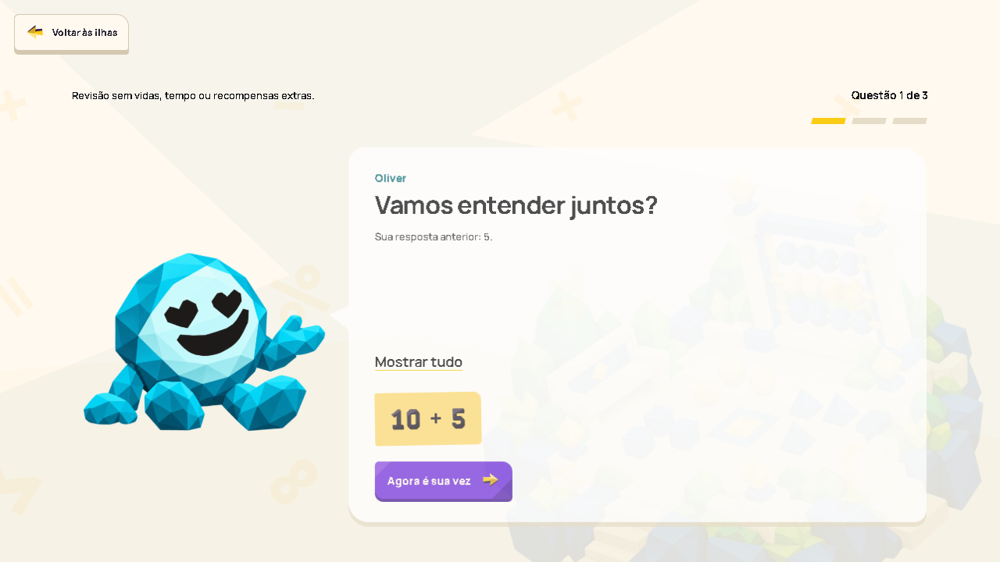
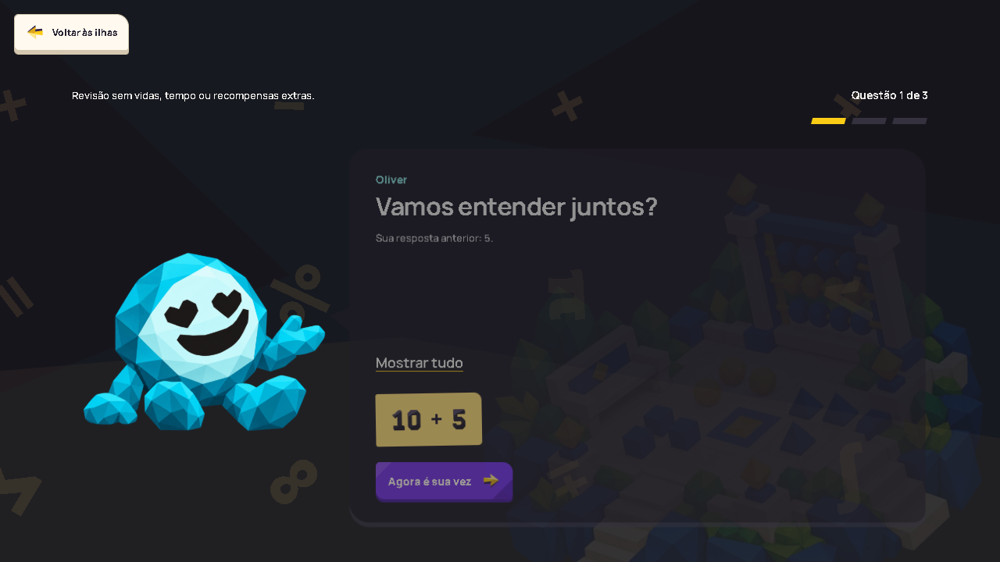
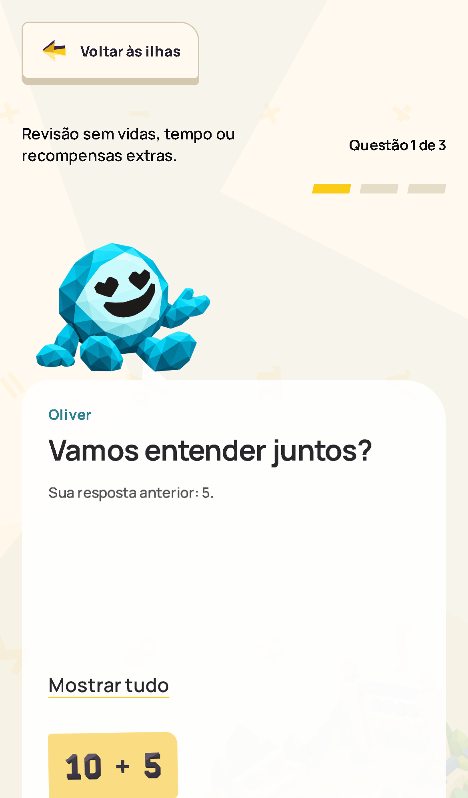
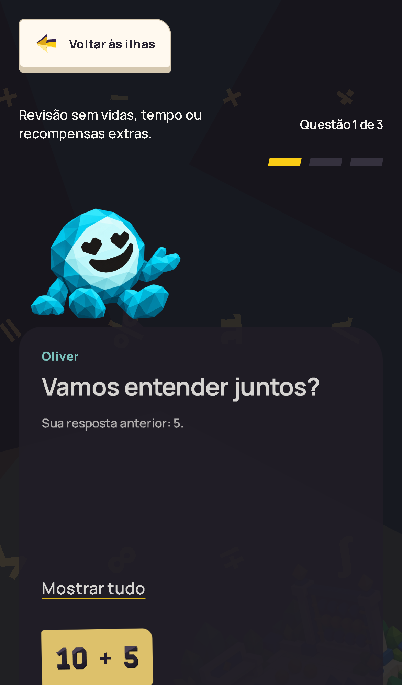
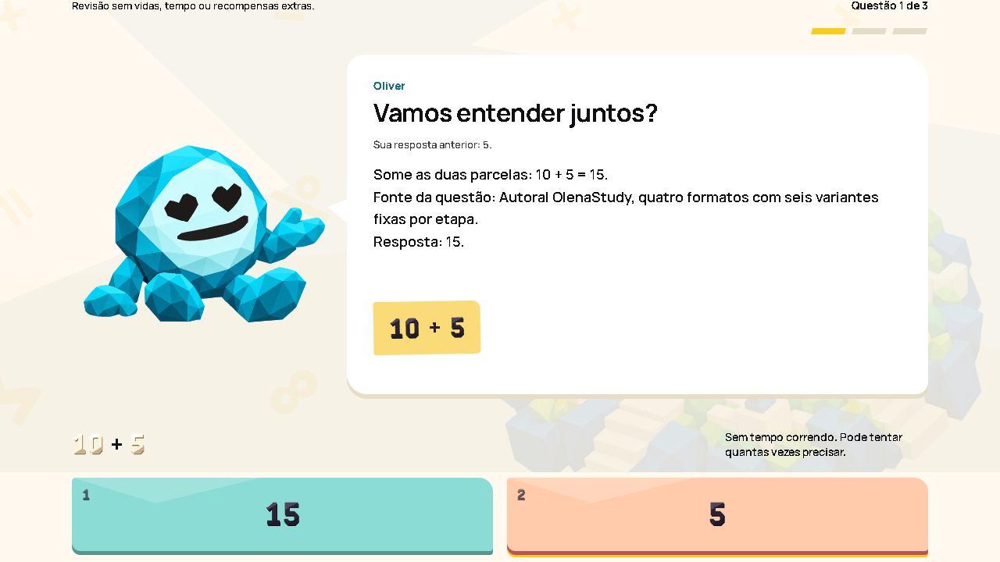
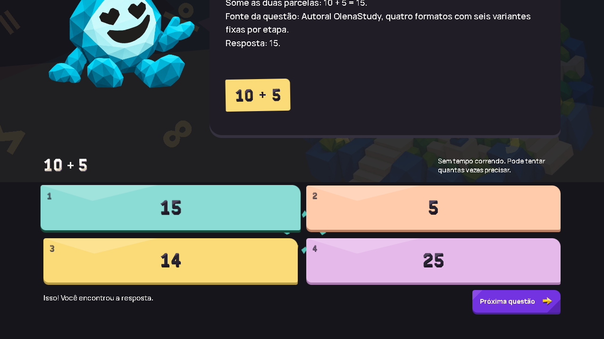
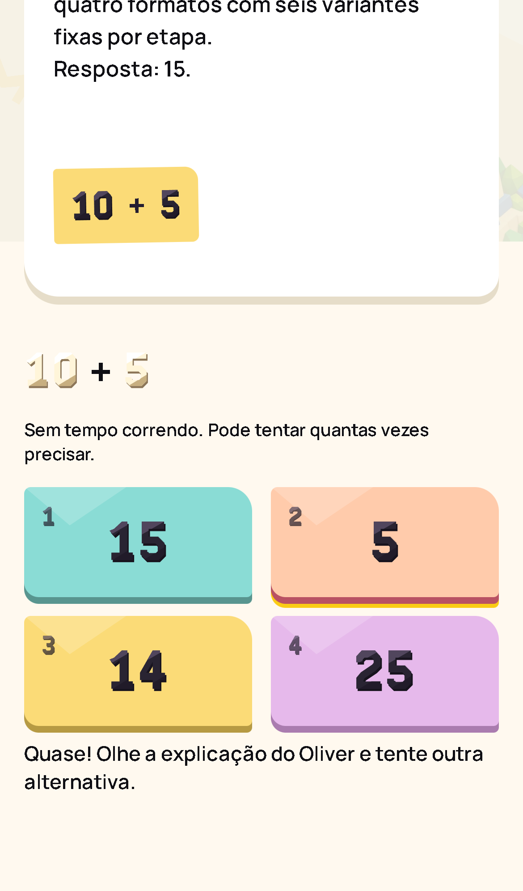
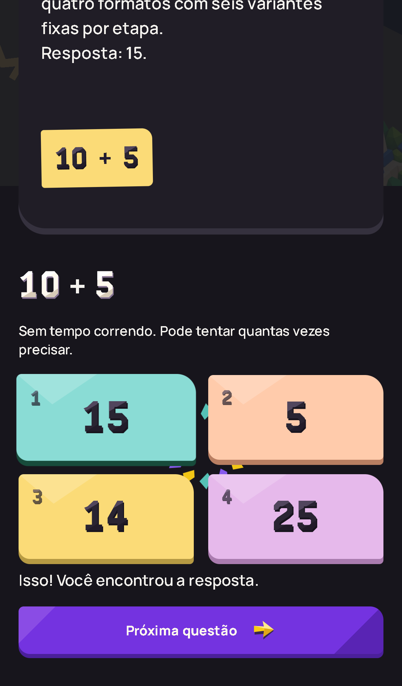

Capturas do app real no Edge headless, fluxo público de matemática com fixtures locais.
Abrir o app local interativo. O build roda sem backend de conta; use o percurso Matemática para conferir a revisão, com dados locais de demonstração.
Estados: introdução e fala de Oliver, tentativa errada, resposta correta e avanço. As imagens são provas estáticas, não mockups. Use clique ou Enter sobre uma imagem para ampliar.








Foram aprovados 32 cenários automatizados de matemática, incluindo 4 combinações de viewport/tema para a revisão, mesma expressão e mesmas quatro opções, tentativas ilimitadas sem corações/cronômetro/recompensas extras, expiração de tempo, foco e teclado. Testes de navegador emulado não validam toque em aparelho físico.